Hyperbolic Orbits and Interplanetary Trajectories#
Prepared by: Emmanuel Airiofolo, Joost Hubbard, Ceyda Alan and Angadh Nanjangud
In this lecture we cover the following topics:
Hyperbolic Orbit#
When \(e>1\) the equation of the orbit describes a hyperbola:
The orbit radius must be \(>0\) thus \(1+e\cos\theta\ge0\Rightarrow\cos\theta\ge-\frac{1}{e}\) for \(-\theta_{Max}\le\theta\le\theta_{Max}\)
When \(\theta=\theta_{Max}\Rightarrow r\rightarrow\infty\), we call \(\theta_{Max}=\theta_{\infty}\)
When \(r=r_{\infty}\), \(v=v_{\infty}\) and
but
hence;
The hyperbola is the locus of points for which the difference of the distance from the two foci is constant \(=2a\).
If we work with negative \(a\) we can use the same formulae of the ellipse:
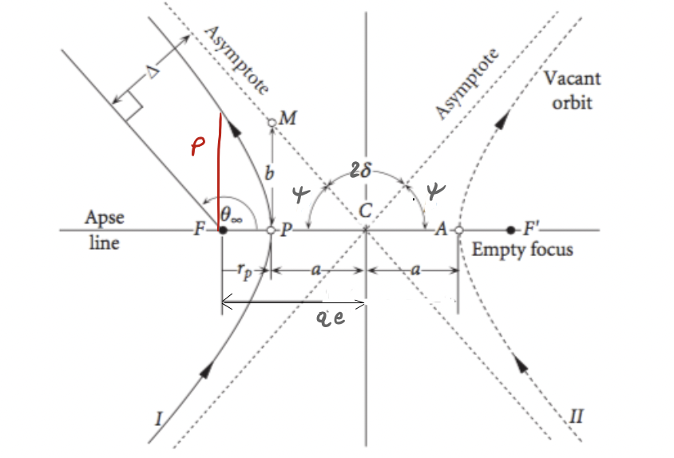
Interplanetary Missions: Patched Conics Model#
Preliminary mission design uses patched conics approximation:
The whole transfer is split into legs described with two-body dynamics.
The planets’ sphere of influences are infinitely large in planetary reference frame but points in heliocentric reference frame.
Planetary legs are instantaneous hyperbolic arcs.
Different legs are patched together either by gravity assist maneuvers or impulse \(\Delta v\).
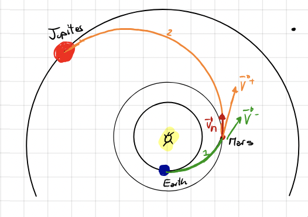
\(1\) and \(2\) are heliocentric arcs (two-body problem under the gravitational pull of the sun).
If we zoom in at Earth’s departure, Mars encounter and Jupiter arrival we see hyperbolic arcs in which the spacecraft feels the gravitational pull only of the Earth, Mars and Jupiter respectively.
At Mars we perform a Gravity Assist Maneuver:
A close passage with a celestial body (in this case it’s Mars) is exploited to change the heliocentric velocity of the spacecraft from \(\bf{V^-}\) to \(\bf{V^+}\): a \(\Delta \bf{v} = \bf{V^+}-\bf{V^-}\) for free!
Gravity Assist#
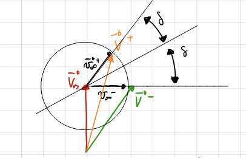
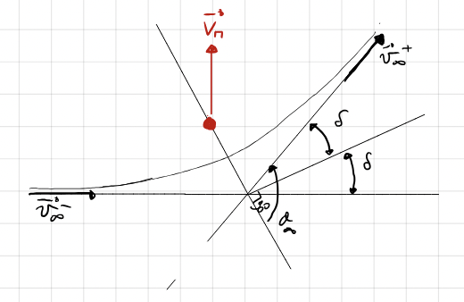
\(\bf{V_M}\) is the heliocentric velocity of Mars.
\(\bf{v_{\infty}^-} = \bf{V^-} - \bf{V_M}\) is the incoming velocity vector \(\underline{relative}\) to Mars.
\(\bf{v_{\infty}^+} = \bf{V^+} - \bf{V_M}\) is the outgoing velocity vector \(\underline{relative}\) to Mars.
As the planetary sphere of influence is infinitely large it follows, hence a hyperbolic arc!
Note \(\frac{\mu}{r_{\infty}} = 0\)
In the two-body problem:
The absolute velocity \(\bf{V^-}\) and \(\bf{V^+}\) are different because the gravity assist steers the velocity \(\bf{v_{\infty}^-}\)
The turn angle \(\delta\) determines the velocity change \(\Delta\bf{v}=\bf{V^+}-\bf{V^-}\)
We obtain \(\Delta\bf{v}\) without propellent consumption.
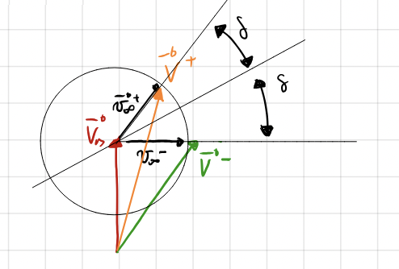
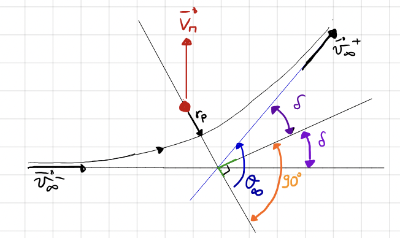
the turn angle \(\delta\) determines the velocity change.
NOTE That:
and
We get a parabola when \(e\rightarrow 1\) , \(\delta\Rightarrow 90^\circ \Rightarrow 2\delta \rightarrow 180^\circ\) maximum turn!
\(e\rightarrow \infty \Rightarrow \delta \rightarrow 0 \Rightarrow\) minimum turn!
With \(v_\infty\) and \(e\) the gravity assist is fully determined.
\(r_p\) is the main design parameter
To Maximise \(\delta\)
Low \(r_p\) (limited by planetary radius)
Low \(v_{\infty}\)
High \(\mu\) (massive planet!)
Velocity at perigee \(v_p\)
Sometimes it is more practical to work with the aiming distance \(\Delta\) as design parameter
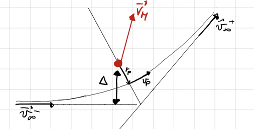
To Maximise \(\delta\)
Low \(\Delta\) (limited by planetary radius)
Low \(v_{\infty}\)
High \(\mu\) (massive planet!)
Use of Gravity Assists#
A passage behind the planet increases the heliocentric velocity.
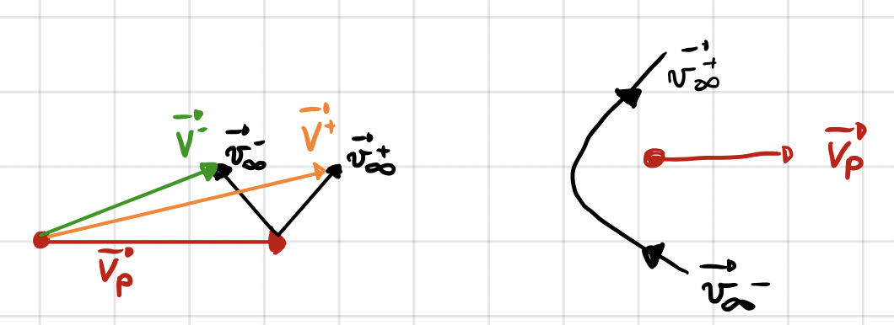
A passage ahead decreases the heliocentric velocity.
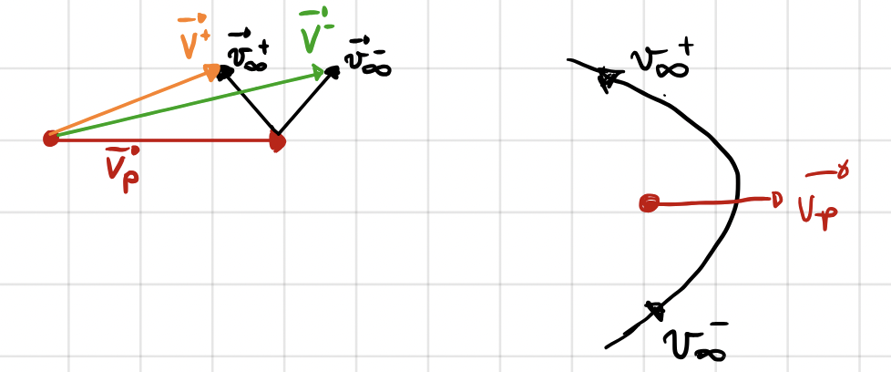
A passage can leave the module of the heliocentric velocity unchanged.
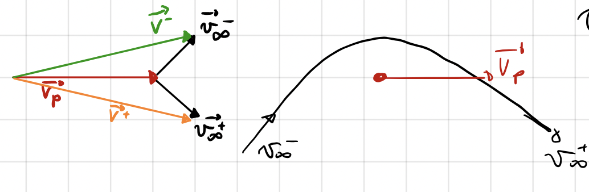
A gravity assist can be used to perform inclination change maneuver.
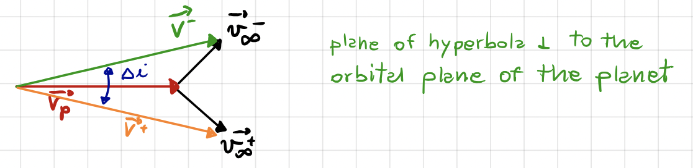